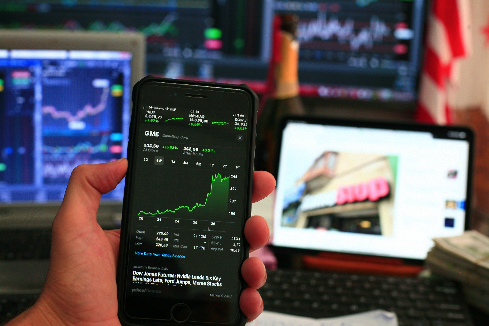
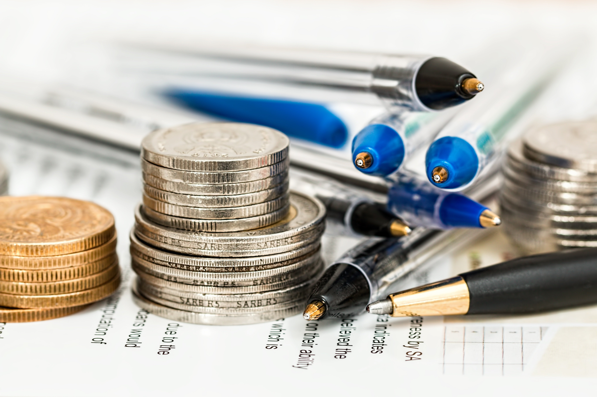

Definisi Investasi
Investasi adalah kegiatan menempatkan sejumlah dana atau modal pada
suatu aset dengan tujuan memperoleh manfaat atau keuntungan di masa
mendatang. Berbeda dengan menyimpan uang untuk kebutuhan sehari-hari,
investasi umumnya dilakukan untuk membantu mencapai tujuan keuangan
dalam jangka waktu tertentu.
Investasi telah berkembang sejak manusia mulai menggunakan berbagai
benda bernilai sebagai alat pertukaran dan penyimpan kekayaan. Seiring
perkembangan zaman, bentuk investasi semakin beragam, mulai dari emas
dan surat utang hingga instrumen modern seperti reksa dana dan saham
yang dapat diakses melalui platform digital.
Setiap instrumen investasi memiliki tingkat risiko, jangka waktu, dan
potensi keuntungan yang berbeda. Oleh karena itu, sebelum berinvestasi,
seseorang perlu memahami karakteristik instrumen yang dipilih serta
menyesuaikannya dengan tujuan dan kemampuan keuangannya.
Jenis-Jenis Investasi
Investasi Emas
Sejarah
Emas telah digunakan sebagai alat tukar dan penyimpan nilai sejak
ribuan tahun lalu. Karena memiliki nilai yang relatif tinggi, tahan
lama, dan tidak mudah rusak, emas kemudian menjadi salah satu aset yang
banyak digunakan untuk menyimpan kekayaan. Hingga saat ini, emas masih
menjadi salah satu pilihan investasi yang dikenal oleh masyarakat.
Cara Investasi
Investasi emas dapat dilakukan dengan membeli emas fisik, seperti emas
batangan, maupun melalui layanan emas digital yang tersedia pada
penyedia resmi. Pada investasi emas digital, investor dapat membeli
emas dalam jumlah tertentu melalui aplikasi tanpa harus menyimpan
emas fisik secara langsung.
Potensi Keuntungan dan Risiko
Keuntungan dari investasi emas terutama berasal dari kenaikan harga
emas. Investor dapat menjual kembali emas ketika harga jual lebih
tinggi dibandingkan harga saat pembelian. Namun, harga emas dapat
mengalami kenaikan maupun penurunan sehingga keuntungan tidak dapat
dipastikan. Emas juga lebih sering digunakan sebagai investasi jangka
menengah hingga panjang dan sebagai salah satu cara untuk menjaga nilai
kekayaan.
Investasi Reksa Dana
Sejarah
Reksa dana merupakan wadah yang digunakan untuk menghimpun dana dari
masyarakat yang kemudian dikelola oleh manajer investasi ke dalam
berbagai instrumen sesuai dengan jenis reksa dana tersebut. Konsep
pengelolaan dana secara kolektif ini berkembang sebagai salah satu cara
bagi masyarakat untuk berinvestasi tanpa harus memilih dan mengelola
setiap aset secara langsung.
Cara Investasi
Untuk mulai berinvestasi pada reksa dana, investor dapat menggunakan
platform investasi atau layanan keuangan yang menyediakan produk reksa
dana. Investor memilih produk sesuai dengan tujuan dan tingkat risiko
yang dapat diterima, kemudian membeli unit penyertaan menggunakan dana
yang dimiliki.
Potensi Keuntungan dan Risiko
Nilai investasi reksa dana dapat bertambah maupun berkurang mengikuti
kinerja aset yang terdapat di dalamnya. Potensi keuntungan berasal dari
kenaikan nilai investasi, tetapi hasilnya tidak dijamin. Karena memiliki
berbagai jenis produk dengan karakteristik berbeda, investor perlu
mempelajari isi portofolio, risiko, biaya, dan tujuan investasi sebelum
membeli reksa dana.
Investasi Obligasi

Sejarah
Obligasi adalah surat utang yang diterbitkan oleh pemerintah atau
perusahaan untuk memperoleh dana dari investor. Dalam investasi ini,
investor memberikan sejumlah dana kepada penerbit obligasi dan penerbit
memiliki kewajiban untuk membayar kembali dana tersebut sesuai dengan
ketentuan yang telah ditetapkan.
Cara Investasi
Obligasi telah lama digunakan sebagai salah satu cara pemerintah dan
perusahaan memperoleh pembiayaan. Saat ini, masyarakat dapat menemukan
berbagai jenis obligasi, termasuk obligasi yang diterbitkan oleh
pemerintah dan perusahaan. Pembelian obligasi juga semakin mudah karena
beberapa produk dapat diakses melalui layanan perbankan maupun platform
investasi resmi.
Potensi Keuntungan dan Risiko
Investor obligasi dapat memperoleh keuntungan dari pembayaran kupon
atau imbal hasil sesuai dengan ketentuan obligasi. Selain itu, pada
kondisi tertentu investor dapat memperoleh keuntungan dari perubahan
harga obligasi apabila menjualnya sebelum jatuh tempo. Namun, obligasi
tetap memiliki risiko, seperti perubahan harga, perubahan tingkat
suku bunga, dan risiko gagal bayar terutama pada obligasi yang
diterbitkan oleh pihak tertentu.
Investasi Saham

Sejarah
Saham merupakan bukti kepemilikan atas suatu perusahaan. Ketika
seseorang membeli saham sebuah perusahaan, orang tersebut memiliki
bagian kepemilikan sesuai dengan jumlah saham yang dimilikinya. Pasar
saham berkembang seiring meningkatnya kebutuhan perusahaan untuk
memperoleh modal dari masyarakat.
Cara Investasi
Saat ini, investasi saham dapat dilakukan secara online melalui
perusahaan sekuritas yang menyediakan aplikasi perdagangan saham.
Investor terlebih dahulu membuka rekening efek, menyetorkan dana,
kemudian dapat memilih dan membeli saham perusahaan yang tersedia
di pasar modal. Sebelum membeli saham, investor sebaiknya mempelajari
kondisi perusahaan dan memahami risiko perubahan harga saham.
Potensi Keuntungan dan Risiko
Keuntungan saham dapat berasal dari kenaikan harga saham atau
capital gain. Investor juga dapat memperoleh dividen apabila perusahaan
membagikan sebagian keuntungannya kepada pemegang saham. Namun, saham
memiliki risiko yang relatif tinggi karena harga dapat mengalami
kenaikan maupun penurunan dalam waktu singkat. Oleh karena itu, saham
membutuhkan pemahaman dan pertimbangan yang matang sebelum dibeli.
Cara Mulai Investasi

Pertama
Tentukan terlebih dahulu tujuan investasi yang ingin dicapai. Tujuan
tersebut dapat berupa menyiapkan dana pendidikan, membeli rumah,
mempersiapkan dana pensiun, atau mencapai tujuan keuangan lainnya.
Tujuan yang jelas akan membantu menentukan jangka waktu dan jenis
investasi yang sesuai.
Kedua
Tentukan jumlah dana yang dapat digunakan untuk investasi. Gunakan dana
yang memang tersedia setelah kebutuhan sehari-hari dan kewajiban
keuangan terpenuhi. Investasi sebaiknya tidak dilakukan dengan
mengorbankan kebutuhan penting atau menggunakan dana yang diperlukan
dalam waktu dekat.
Ketiga
Di zaman sekarang, investasi dapat dilakukan dengan lebih mudah melalui
layanan digital. Beberapa bank, perusahaan sekuritas, dan platform
investasi menyediakan aplikasi yang dapat diunduh melalui Google Play
Store maupun App Store. Gunakan hanya layanan resmi dan pastikan
memahami produk yang ditawarkan sebelum melakukan transaksi.
Keempat
Pelajari instrumen investasi sebelum membelinya. Pahami bagaimana
instrumen tersebut bekerja, dari mana potensi keuntungannya, berapa
risikonya, serta biaya yang mungkin dikenakan. Jangan memilih investasi
hanya karena mengikuti tren atau ajakan orang lain.
Kelima
Setelah memilih instrumen yang sesuai, lakukan investasi secara
bertahap dan pantau perkembangannya. Evaluasi investasi secara berkala
untuk memastikan bahwa pilihan tersebut masih sesuai dengan tujuan
dan kondisi keuangan. Ingat bahwa setiap investasi memiliki risiko dan
tidak ada investasi yang dapat menjamin keuntungan.